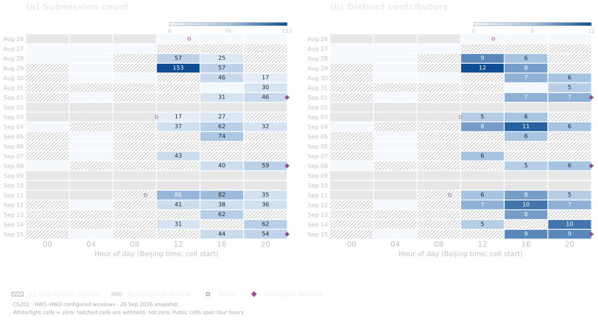
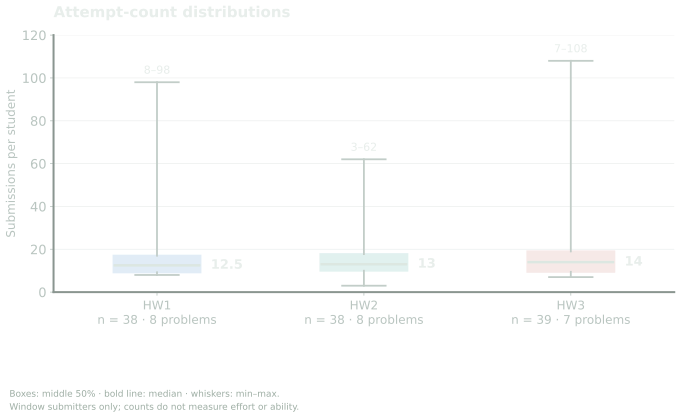
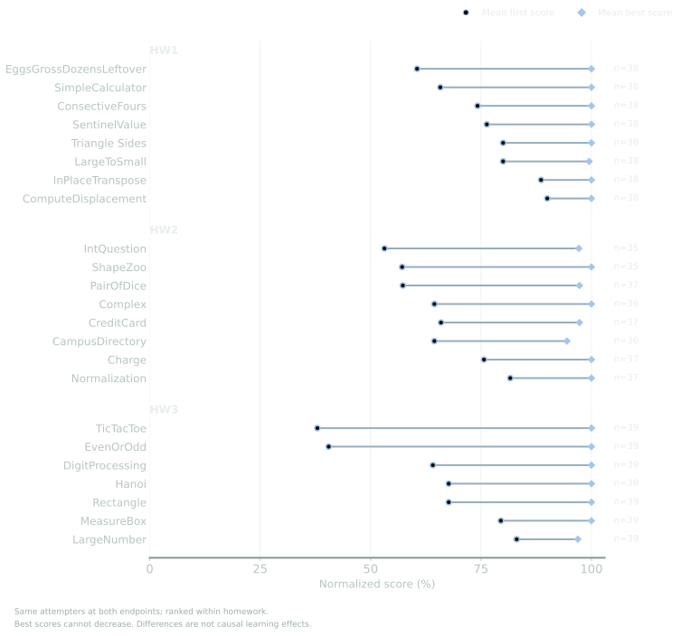
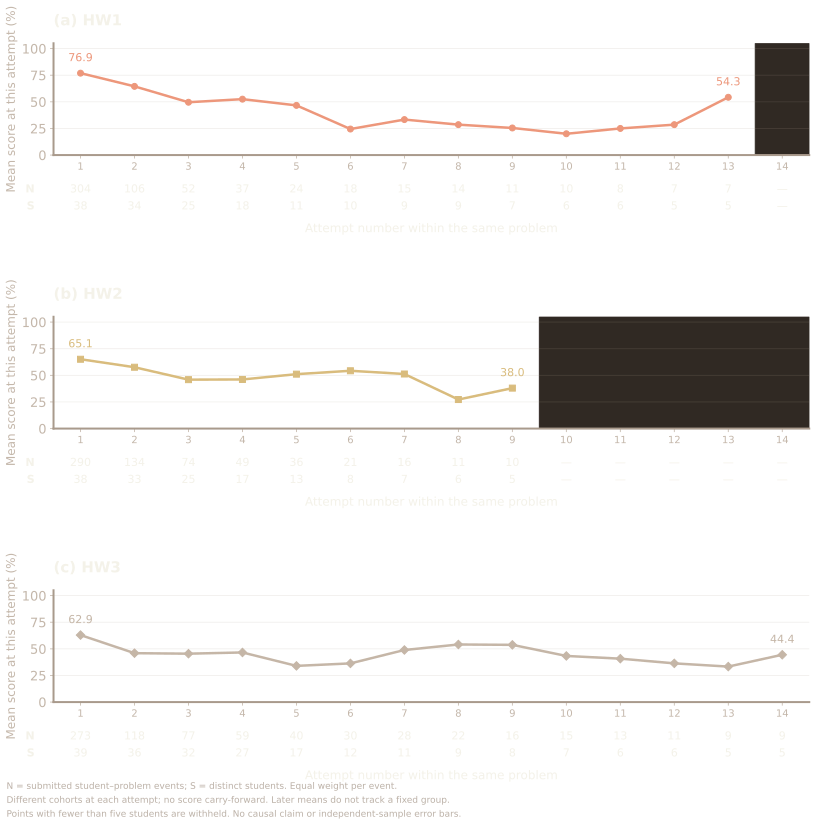
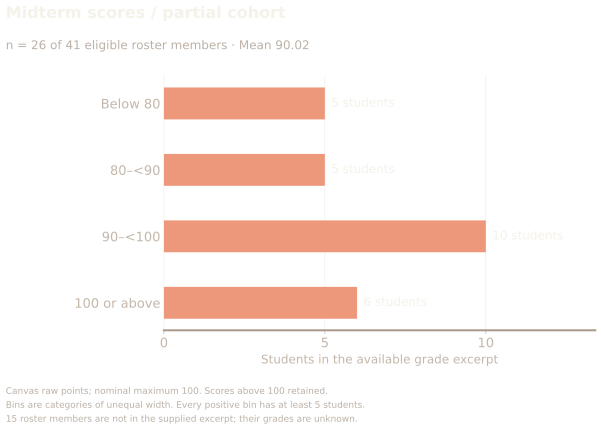
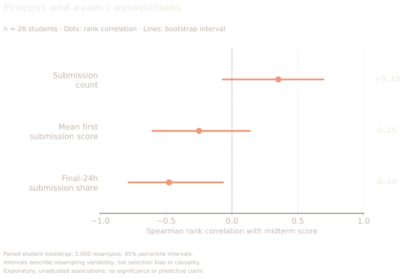
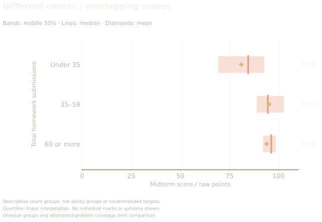
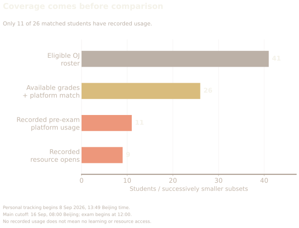
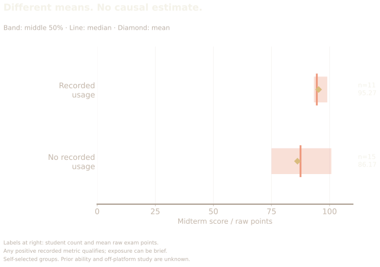
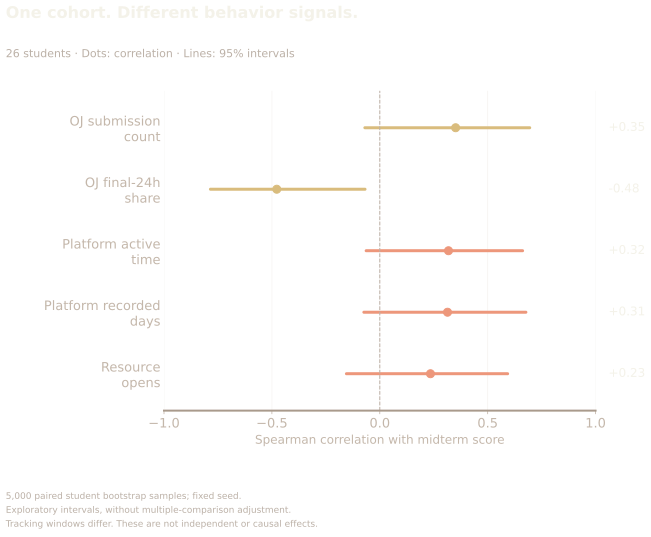

OJ + Course Pulse + midterm outcomes / STATS 401
The score has a past.
2,101 submissions.
Three homeworks.
26 matched exam scores.
Two behavior sources.
Ten views of the evidence.
First submission Mean / 100
37.95Best submission Mean / 100
100HW3 TicTacToe · Same 39 attempters
First and best scores describe submissions, not a causal learning effect.
Timing
233 submissions.
14 people.
On 29 August, activity volume and participation told different stories. A busy period does not mean the whole class was working.
Four-hour cells · Beijing time · groups below five masked

Retries
Similar medians.
Different paths.
Typical counts are 12.5, 13 and 14. Behind those medians, the observed ranges are 8–98, 3–62 and 7–108.
Window submitters only · counts do not measure effort

First to best
The endpoint
leaves things out.
For HW3 TicTacToe, the same 39 attempters average 37.95 first and 100 best. The final score hides that difference.
Same attempters · normalized scores · no causal claim

Actual attempt scores
A new attempt.
A different cohort.
Each point averages the actual nth submission to a problem. Pairs that stop submitting leave the later points.
N = events · S = students · no carry-forward

Midterm scores
Same homework.
A wider spread.
The 26 available exam scores average 90.02. This is a partial cohort: 15 eligible roster members are not in the supplied grade excerpt.
Raw exam points · scores above 100 retained · 26 of 41 members

Process and exam
An association.
Not an explanation.
Final-day submission share has a negative rank association with exam scores (ρ = -0.48). Count and first-score intervals cross zero.
Paired student bootstrap · partial cohort · no causal claim

Overlapping outcomes
More attempts.
No simple rule.
Exam-score ranges overlap across submission groups. The middle group has the highest mean; the highest-count group has the highest median.
Bands = middle 50% · line = median · diamond = mean

Platform coverage
A second window.
Only part of the story.
All 26 grade records match Course Pulse accounts, but only 11 have recorded pre-exam usage. Personal tracking begins on 8 September.
Nested subsets · no record does not mean no learning

Platform and scores
A difference.
Not a platform effect.
Recorded users average 95.27 points, compared with 86.17 for those without records. Prior ability and off-platform study remain unknown.
11 recorded / 15 without records · bands = middle 50%

Combined evidence
Timing stands out.
Usage is less certain.
Platform time, recorded days and resource opens show positive associations, but all three intervals cross zero. OJ final-day share remains negative.
Same 26 students · different tracking windows · exploratory

CONTINUE THE RESEARCH
Behind the figures.
Read the detailed analysis, data tables and methods on a separate page.
Analysis & methods ↗